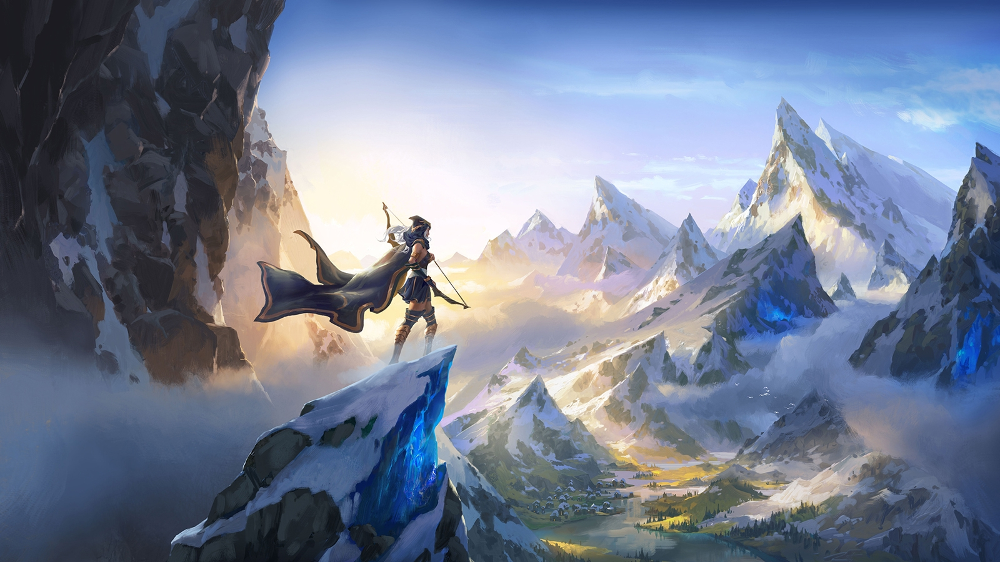
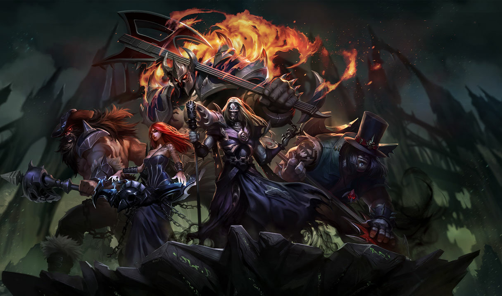
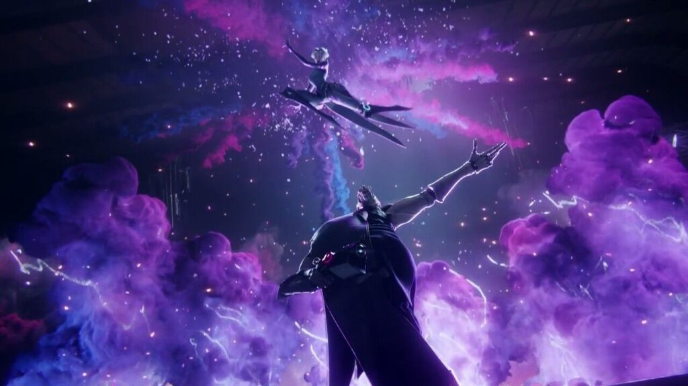

Lore, Teasers e Cinemáticas
A Riot Games tem várias equipas, cada uma destinada a um certo tipo de tarefas, umas dessas equipas é a da lore. Lore é a histórias entre os vários campeões e personagens do universo do League of Legends. Sempre que é lançado algo novo no jogo, quer seja um campeão, uma skin ou até mesmo um mapa, estes veem com uma história associada, que os liga a outros personagens ou regiões. Os campões vêem de uma terra chamada Runeterra, Dividida em várias facções/Reinos. Existem vários tipos de relações entre os campeões, uns são irmãos, outros amigos, alguns têem rivalidades entre si, há casamentos e até relações entre robô ou experiência cientí�ca e seus criadores.

Considerado por muitos um dos melhores departamentos da Riot Games é o da música. League of Legends é conhecido por muitos pelas músicas associadas ao jogo. Já foram criados grupos como Pentakill (metal), K/DA (K-Pop) ou True Damage (Hip-Hop), todos eles reconhecidos ou interpretados por músicos que em nada são relacionados à empresa. Há ainda todos os anos uma "música tema"para os Worlds. São também excecionalmente criadas músicas associadas a outros eventos que possam ocorrer.

Outra Equipa que muita gente considera muito boa é a das Cinemáticas. Este departamento está encarregue de fazer pequenos vídeos, como curta-metragens, com os campeões e personagens do jogo envolvidos. Normalmente estas cinemáticas vêem acompanhadas de música ou mesmo de uma narrativa. Contrariamente às músicas, nem todas estão associadas a eventos.
Um exemplo de um cinemática feita pela Riot Games pode ser vista aqui.
